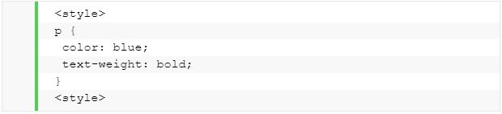

Que es CSS
CSS (en inglés Cascading Style Sheets) es lo que se denomina lenguaje de hojas de estilo en cascada y se usa para estilizar elementos escritos en un lenguaje de marcado
como HTML. CSS separa el contenido de la representación visual del sitio.
CSS fue desarrollado por W3C (World Wide Web Consortium) en 1996 por una razón muy sencilla. HTML no fue diseñado para tener etiquetas que ayuden a formatear la página.
Está hecho solo para escribir el marcado para el sitio.
Se incluyeron etiquetas como en HTML versión 3.2, y esto les causó muchos problemas a los desarrolladores. Dado que los sitios web tenían diferentes fuentes, fondos de colores
y estilos, el proceso de reescribir el código fue largo, doloroso y costoso. Por lo tanto, CSS fue creado por W3C para resolver este problema.
La relación entre HTML y CSS es muy fuerte. Dado que HTML es un lenguaje de marcado (es decir, constituye la base de un sitio) y CSS enfatiza el estilo (toda la parte estética de un sitio web), van de la mano.
CSS no es técnicamente una necesidad, pero no querrás tener un sitio que solo tenga HTML, ya que se vería completamente desnudo.
Ventajas de CSS
CSS permite estilizar todo en un archivo diferente, creando el estilo allí y después integrando el archivo CSS sobre el marcado HTML. Esto hace que el marcado HTML sea mucho más limpio y fácil de mantener.
En resumen, con CSS no tienes que describir repetidamente cómo se ven los elementos individuales. Esto ahorra tiempo, hace el código más corto y menos propenso a errores.
CSS te permite tener múltiples estilos en una página HTML, y esto hace que las posibilidades de personalización sean casi infinitas. Hoy en día, esto se está volviendo una necesidad más que algo básico.
Cómo funciona CSS
CSS utiliza una sintaxis simple basada en el inglés con un conjunto de reglas que la gobiernan. Como mencionamos anteriormente, HTML no fue hecho con la intención de utilizar elementos de estilo, sino solo para el marcado de la página. Fue creado simplemente para describir el contenido. Por ejemplo:

Bibliografia y Fuente: ¿Qué Es CSS? (2019, enero 24). Tutoriales Hostinger. https://www.hostinger.co/tutoriales/que-es-css/